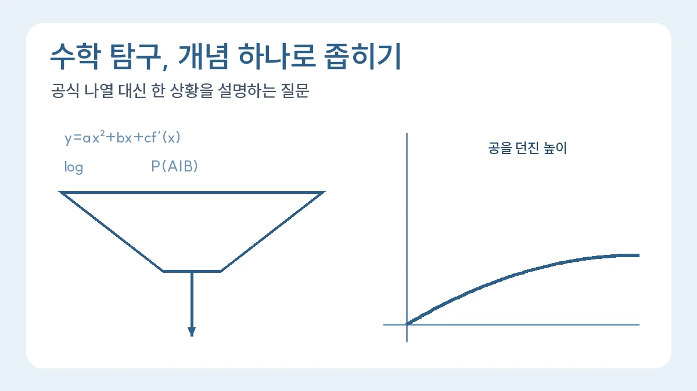

수학 과목 탐구보고서 주제 좁히는 법
수학 보고서는 어려운 공식 나열보다 하나의 개념이 실제 상황을 어떻게 설명하는지 좁혀야 합니다.
목차
- 넓은 관심을 비교 가능한 질문으로 바꾸기
- 정의를 먼저 쓰고 빈도표 계산하기
- 결론 문장의 오류를 수정하는 예시
- 자료와 계산 기록을 남기는 방법
- 다른 수학 주제에 적용하기
- 수학과제 탐구 과목에서 보고서를 설계하는 4단계
- 공식 설명을 넘는 수학 탐구 주제 10개
- 확률과 통계 예시: 학교 설문을 분석하는 법
- 미적분 예시: 변화율로 교통량 읽기
핵심 요약
- 공식보다 질문을 먼저 정하기
- 변수와 조건을 명확히 쓰기
- 수학적 한계를 결론에 포함하기

수학 탐구보고서는 공식을 많이 나열하기보다 하나의 질문에 필요한 변수와 조건을 정하는 글입니다. 이 글은 이미 선택한 수학 주제를 계산 가능한 질문으로 좁히는 방법에 집중합니다. 아래 수치는 계산 연습용 가정이며 실제 검사 자료나 학생 수행 결과가 아닙니다.
1. 넓은 관심을 비교 가능한 질문으로 바꾸기
‘확률과 의료’는 조사 범위가 너무 넓습니다. ‘검사가 정확하면 양성 결과를 반드시 믿어도 될까?’를 거쳐 ‘민감도와 특이도를 고정하고 대상 집단의 유병률만 바꾸면 양성예측도가 어떻게 달라질까?’로 좁혀 보세요. 무엇을 바꾸고 무엇을 고정하는지 보이면 필요한 계산과 자료도 정할 수 있습니다.
조건부확률은 실제 배운 교과 범위를 확인하고, 아직 배우지 않은 내용은 추가 학습으로 표시합니다. 공식을 바로 대입하기 어려우면 가상의 사람 수를 담은 빈도표로 시작할 수 있습니다.
2. 정의를 먼저 쓰고 빈도표 계산하기
- 민감도: 실제 질환이 있는 사람 중 양성으로 판정된 비율
- 특이도: 실제 질환이 없는 사람 중 음성으로 판정된 비율
- 양성예측도: 양성으로 판정된 사람 중 실제 질환이 있는 사람의 비율
가상 집단 10,000명, 민감도 90%, 특이도 95%를 가정합니다. 유병률이 1%라면 질환이 있는 100명 중 참양성은 90명입니다. 질환이 없는 9,900명 중 위양성은 495명이므로 양성예측도는 90÷(90+495)×100≈15.38%입니다.
유병률만 10%로 바꾸면 참양성은 900명, 위양성은 450명이 되어 양성예측도는 900÷(900+450)×100≈66.67%입니다. 이 비교는 민감도와 특이도가 두 집단에서 동일하다는 가정 아래 이루어집니다. 현실의 검사 성능은 검사 방법과 대상 집단에 따라 달라질 수 있습니다.
3. 결론 문장의 오류를 수정하는 예시
수정 전: “민감도가 90%이므로 양성 결과가 맞을 확률도 90%이다.”
수정 후: “민감도는 질환이 있는 사람을 기준으로 한 비율이다. 이번 가상 빈도표에서는 양성인 사람을 기준으로 다시 계산해야 했고, 유병률을 바꾸자 양성예측도도 달라졌다.”
이는 실제 학생의 실패담이 아니라 흔한 분모 혼동을 보여주는 교육용 수정 예시입니다. 보고서에서는 직접 만든 표, 계산식, 어떤 집단을 분모로 삼았는지를 함께 제시하세요. 실제 건강 상태를 판단하거나 특정 검사·치료를 권하는 근거로 사용하지 않습니다.
4. 자료와 계산 기록을 남기는 방법
OpenStax 『Introductory Statistics 2e』의 확률 규칙 단원은 확률 학습을 위한 추가 읽기 자료입니다. 출처에는 책·단원 제목, URL, 실제 열람일을 적습니다. 위의 90%·95%·1%·10%는 이 자료에서 가져온 검사 성능이 아니라 이 글이 정한 가정입니다.
스프레드시트를 쓰면 가정값을 별도 셀에 두고 참양성·위양성·양성예측도 공식을 남기세요. 같은 조건을 손계산과 비교하고, 0으로 나누는 경우 및 반올림 위치도 확인합니다. 코드나 AI의 도움을 받았다면 도움받은 범위와 직접 검산한 부분을 구분합니다.
5. 다른 수학 주제에 적용하기
‘함수와 경제’라면 특정 상품의 가격과 수요를 임의로 연결하기보다 사용할 자료, 관찰 기간, 단위와 함수 가정을 먼저 정합니다. ‘행렬과 암호’라면 행렬 하나와 복호화 가능 조건 하나를 선택합니다. 질문을 좁힌 다음 계산과 해석을 분리하는 원칙은 같습니다.
전체 목차는 처음 쓰는 탐구보고서 대표 작성 가이드에서 확인하세요. 이 글은 질문·변수 설정을, 샤를 법칙과 직선 모델 및 역행렬과 연립방정식 글은 각 주제의 유도·계산을 맡습니다. 실제 활동을 정리할 때는 가정, 계산, 수정한 문장, 남은 질문을 기록하고 미수행 내용을 완료한 것처럼 쓰지 않습니다.
6. 수학과제 탐구 과목에서 보고서를 설계하는 4단계
수학과제 탐구는 2022 개정 교육과정에서 수학의 융합선택 과목입니다(교육과정 총론 PDF 38쪽, 인쇄 26쪽). 2026 학생부 기재요령은 이 과목을 정규 교육과정의 성취기준에 따라 수업 중 연구보고서(소논문) 작성이 가능한 과목으로 들고, 특기할 만한 경우 실적(제목, 연구 주제, 참여인원, 소요시간)을 제외하고 세부능력 및 특기사항을 기재할 수 있다고 적습니다(2026 기재요령 PDF 124쪽, 인쇄 118쪽). 학교 밖에서 혼자 쓴 소논문과는 다르다는 뜻입니다. 과목의 성취기준과 평가계획은 담당 교사 안내로 확인하세요. 이 글은 성취기준 문구를 대조하지 않았습니다.
- 과제 정하기: 배운 개념 하나와 자료로 답할 수 있는 질문 하나를 짝짓습니다. ‘수학과 생활’이 아니라 ‘연속 할인은 할인율을 더한 것과 같을까?’처럼 계산으로 확인할 수 있어야 합니다.
- 변수와 가정 고정하기: 무엇을 바꾸고 무엇을 고정하는지 적습니다. 예) 할인율 a, b는 0과 1 사이, 할인은 순서대로 적용, 쿠폰 중복 규칙은 고려하지 않음.
- 계산과 검증 계획: 구체적인 수로 먼저 계산하고, 일반식으로 바꾼 뒤, 다른 수로 다시 검산합니다. 손계산과 스프레드시트 결과가 같은지도 확인합니다.
- 결과·한계·다음 질문 쓰기: 가정이 바뀌면 결론이 어떻게 달라지는지 적고, 확인하지 않은 경우를 남은 질문으로 둡니다.
설계 연습(가상 예시)
30% 할인 뒤 추가 20% 할인을 받으면 남는 가격은 원래 가격의 0.7 × 0.8 = 0.56, 곧 56%입니다. 실제 할인율은 44%로, 30% + 20% = 50%보다 작습니다. 일반식으로 쓰면 연속 할인율은 1 − (1 − a)(1 − b) = a + b − ab이고, a와 b가 모두 0보다 크면 ab만큼 항상 합보다 작습니다. 검산: a = 0.3, b = 0.2를 넣으면 0.3 + 0.2 − 0.06 = 0.44.
한계: 정액 할인이나 ‘○원 이상 구매 시’ 같은 조건은 이 식으로 설명되지 않습니다. 남은 질문: 할인 순서를 바꾸면 정액 할인이 섞인 경우 결과가 달라질까?
이 예시는 편집팀이 만든 계산 연습이며 실제 학생의 과제나 결과가 아닙니다. 위 1~5절의 질문 좁히기와 기록 방법을 그대로 적용하면 됩니다. 학교 밖 소논문과 수업 중 탐구의 기록 차이는 탐구보고서와 소논문 차이를 참고하세요.
7. 공식 설명을 넘는 수학 탐구 주제 10개
‘피타고라스 정리의 증명 방법 조사’처럼 공식을 설명하는 보고서는 교과서와 크게 다르지 않습니다. 아래 주제는 모두 자료 하나와 계산 하나가 짝지어져 있어서, 학생이 직접 숫자를 넣고 결과를 해석해야 끝나는 질문입니다. 편집팀이 만든 교육용 목록입니다.
- 대수 · 지수함수: 예금 금리 3%를 단리와 복리로 계산하면 10년 뒤 차이는 얼마이고, 몇 년째부터 눈에 띄게 벌어지는가?
- 대수 · 수열: 휴대전화 요금제 두 개의 누적 요금은 몇 개월째에 역전되는가?
- 미적분Ⅰ · 변화율: 등굣길 교차로의 누적 통과 차량 수로 시간대별 교통량(변화율)을 추정할 수 있는가? (아래 9절)
- 미적분Ⅰ · 최적화: 같은 넓이의 상자를 만들 때 겉넓이가 가장 작은 치수는 실제 우유갑 치수와 얼마나 다른가?
- 확률과 통계 · 표본: 학교 설문에서 응답자 비율의 차이가 표본에 따른 흔들림보다 큰가? (아래 8절)
- 확률과 통계 · 조건부확률: 정확도가 같은 검사라도 유병률이 바뀌면 양성예측도가 어떻게 달라지는가? (위 1~2절)
- 기하 · 벡터: 바람이 부는 날 공을 차는 방향을 벡터의 합으로 나타내면 실제 궤적과 무엇이 다른가?
- 공통수학 · 행렬: 2×2 행렬 암호에서 어떤 행렬은 왜 해독이 불가능한가? (역행렬이 없을 조건)
- 실용 통계 · 회귀: 기온과 매점 아이스크림 판매량 자료에서 직선 모델이 잘 맞지 않는 구간은 어디인가?
- 경제 수학 · 할인율: 연속 할인과 정액 할인이 섞이면 순서에 따라 결제 금액이 달라지는가? (위 6절 연습에서 이어짐)
목록에서 하나를 고른 다음에는 1절처럼 ‘바꾸는 것’과 ‘고정하는 것’을 먼저 적으세요. 고른 주제가 아직 넓다면 그 주제는 목록에서 빼고 질문을 더 좁히는 편이 낫습니다.
8. 확률과 통계 예시: 학교 설문을 분석하는 법
확률과 통계 탐구보고서에서 가장 흔한 실수는 설문 결과의 비율을 그대로 결론으로 옮기는 것입니다. 아래는 가상의 설문 자료로 계산 순서를 보여 주는 예시입니다. 실제 학교의 조사 결과가 아닙니다.
- 질문과 정의: ‘평일에 7시간 이상 잔다’를 “지난주 월~금 평균 수면이 7시간 이상”으로 정의합니다. 문항에 ‘충분히’ 같은 판단어를 넣지 않습니다.
- 집계: 1·2·3학년 각 40명, 모두 120명이 응답했고 7시간 이상이라고 답한 학생은 22명, 18명, 14명이었습니다. 비율은 55%, 45%, 35%, 전체는 54/120 = 45%입니다.
- 흔들림 계산: 전체 비율 45%의 표준오차는 √(0.45 × 0.55 / 120) ≈ 0.045이고, 1.96을 곱하면 약 ±8.9%p입니다. 학년별로는 표본이 40명뿐이라 흔들림이 더 큽니다.
- 해석 문장: “학년이 올라갈수록 7시간 이상 자는 비율이 낮게 나타났다. 다만 학년별 응답자가 40명이고, 무작위로 뽑은 표본이 아니라 담임 학급 단위로 모았기 때문에 이 차이를 학교 전체의 차이로 일반화하기는 어렵다.”
±8.9%p라는 계산은 무작위 표본을 가정한 값입니다. 학급 단위로 모은 자료에는 그 가정이 맞지 않으므로 수치를 쓰되 가정이 어긋난다는 사실을 한계 문단에 함께 적어야 합니다. 응답자의 이름·학번을 받지 않는 문항 설계와 학교의 허락도 계획서 단계에서 확인합니다. 표와 그래프를 본문 문장으로 옮기는 법은 표·그래프 해석 문단 쓰기를 참고하세요.
9. 미적분 예시: 변화율로 교통량 읽기
미적분 탐구에서 변화율을 실제 자료에 적용할 때는 ‘누적량’과 ‘변화율’을 구분하는 것부터 시작합니다. 아래는 학교 앞 교차로를 5분 간격으로 센 가상의 누적 차량 수입니다.
- 시각(분): 0, 5, 10, 15, 20, 25, 30
- 누적 통과 차량(대): 0, 40, 95, 165, 230, 280, 310
구간마다 평균변화율을 구하면 분당 8, 11, 14, 13, 10, 6대입니다. 10~15분 구간이 가장 붐볐다는 뜻입니다. 15분 시점의 순간 교통량은 앞뒤 구간을 함께 써서 (230 − 95) / (20 − 10) = 13.5대/분으로 어림할 수 있습니다. 누적 그래프의 기울기가 곧 교통량이라는 점을 그래프와 함께 설명하면 미분계수의 의미를 자기 말로 보여 줄 수 있습니다.
결론 문장 고치기
수정 전: 미분을 이용해 교차로의 정확한 교통량을 구했다.
수정 후: 5분 간격 누적 자료의 평균변화율로 시간대별 교통량을 어림했다. 15분 시점은 앞뒤 구간의 평균으로 13.5대/분으로 추정했지만, 5분 안의 신호 주기 변화는 이 간격으로 보이지 않으므로 1분 간격 자료로 다시 확인할 필요가 있다.
직접 세는 대신 공개된 교통량 자료를 쓸 때는 측정 지점, 집계 간격, 단위(대/시간인지 대/15분인지)를 먼저 적습니다. 차량 번호판이나 사람 얼굴이 찍히는 영상 촬영은 하지 않습니다. 같은 자료로 사회 문제를 다루는 융합 탐구로 넓히려면 사회 과목 정책 양면성 보고서의 구조가 도움이 됩니다.
관련 글

탐구보고서 쓰는 법: 형식 6요소와 서론·본론·결론 실제 예시NEW
탐구보고서의 기본 구조 6요소와 작성 순서, 한 가지 가상 예시로 완성하는 서론·본론·결론 문장, 하루 30분씩 5일 작성 계획과 수정 기록 방법을 정리한 대표 작성 가이드입니다.
공학계열 탐구보고서 주제 예시: 탐색 방법을 직접 비교하기NEW
같은 목록에서 두 탐색 방법을 비교하고 확인 횟수·평균·빈 입력·중복값·정렬 조건을 검증합니다.
서류기반면접 예상 질문 준비법: 답변마다 근거를 붙이는 연습NEW
자신의 활동에서 근거 위치를 찾고 실제 수행·공동 역할·한계를 구분해 질문과 꼬리질문에 답합니다.
이 글은 일반 교육 정보이며 특정 대학 합격·학생부 평가·면접 결과를 보장하지 않습니다. 학교와 대학의 공식 안내를 함께 확인해 주세요.